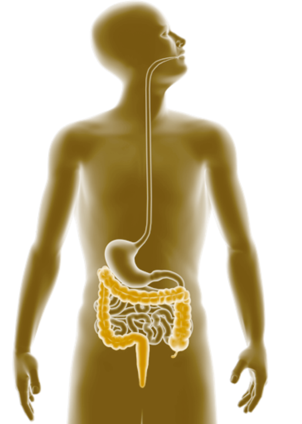

About
We study how the gut microbiome shapes human health and evolution

Life depends on success in acquiring energy and allocating it efficiently to growth, maintenance, reproduction and activity. Our lab studies the biological, behavioral, and environmental determinants of human energy gain and utilization, and how changes in these factors over evolutionary time have shaped the human body.
Our current research in the Nutritional & Microbial Ecology Lab probes the energetic consequences of physiological interactions between humans and the trillions of microbes resident in the human gastrointestinal tract. This microbial community promotes nutrient digestion, synthesizes vitamins, metabolizes xenobiotic compounds, and shapes host immunity, activities that can have profound energetic consequences for the human host. Critically, these microbial contributions to human energy gain are not fixed, but rather depend on diverse microbial niches linked to within- and between-person differences in diet, health, and genetic factors. Interrogating these human-microbial interactions promises new insight into the modulation of human energy gain in the past and present, a fundamental question of biology with implications for the approximately 1 in 3 people worldwide affected by energy surplus or shortage.